Hikone, Shiga: things to do, food and stays
Hikone · Shiga
Hikone
Highlighted on the Shiga map.

Stay
蒼の湖邸 BIWAFRONT HIKONE（ビワフロント彦根）
Ao No Mizumi Tei BIWAFRONT HIKONE(Biwafuronto Hikone)
Inn in Matsubara, Hikone with lakeside location.
料亭旅館 やす井
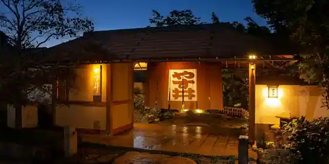
Ryotei Ryokan Yasu I
Ryokan inn in Yasukiyo, Hikone with in-room dining.
ホテル ビワドッグ
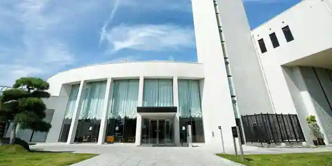
Hotel Biwadoggu
Hotel in Shinkai, Hikone with lakeside location.
びわ湖畔 味覚の宿 双葉荘
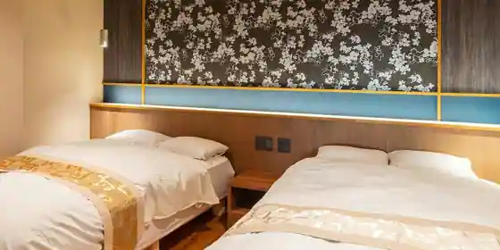
Biwa Kohan Mikaku No Yado Futaba So
Inn in Matsubara, Hikone with lakeside location.
ホテルサンルート彦根
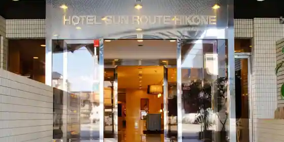
Hotel Sanruto Hikone
コンフォートホテル彦根
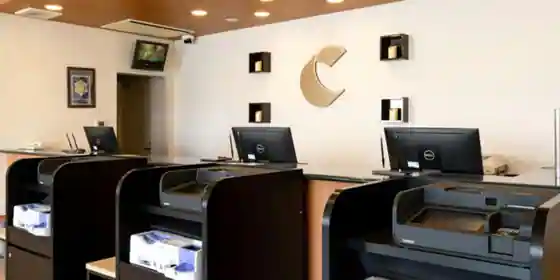
Comfort Hotel Hikone
Hotel in Ekihigashi, Hikone with parking.
彦根キャッスル リゾート＆スパ
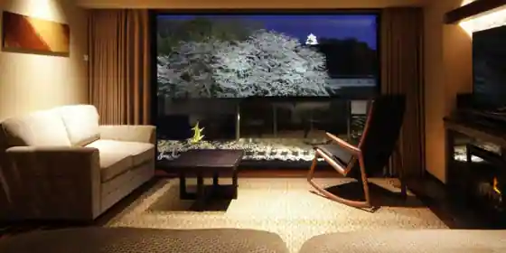
Hikone Kyassuru Resort & Supa
Resort hotel in Sawa, Hikone with a large communal bath.
ホテルルートイン彦根
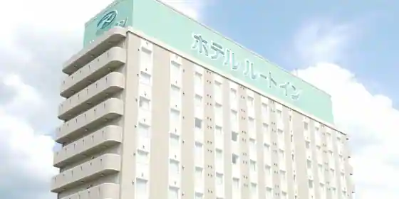
Hotel Route Inn Hikone
Hotel in Higashinunami, Hikone with breakfast available and parking.
LAKE villa CHITOSE
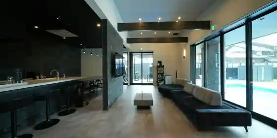
LAKE villa CHITOSE
Inn in Matsubara, Hikone with open-air baths and a sauna.
サラエスタシオン彦根
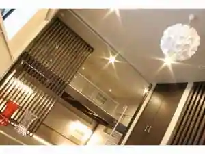
Saraesutashion Hikone
Inn in Sawa, Hikone with open-air baths.
ホテルエスタシオン彦根
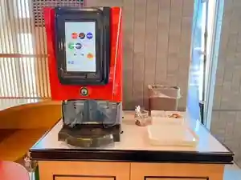
Hotel Esutashion Hikone
Hotel in Asahi, Hikone; 3-minute drive from Rhikoneekinishiguchitoho2Funhikone IC.
カーサエスタシオン彦根
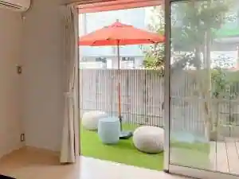
Kasaesutashion Hikone
Dining
ラーメンにっこう
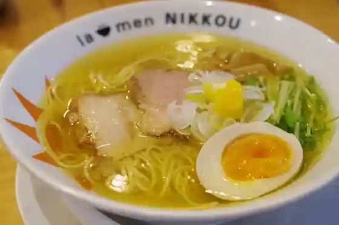
Ramen Nikko
雪月花 彦根
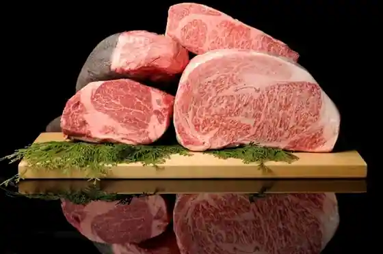
Yuki Gekka Hikone
麺や 江陽軒
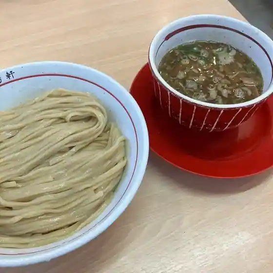
Men Ya Koyo Ken
比内地鶏 ほっこりや 夢京橋店
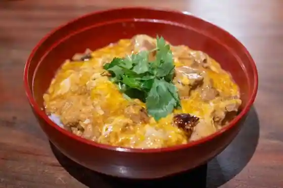
Hinai Jidori Hokkoriya Yume Kyobashi
いと重菓舗 本店
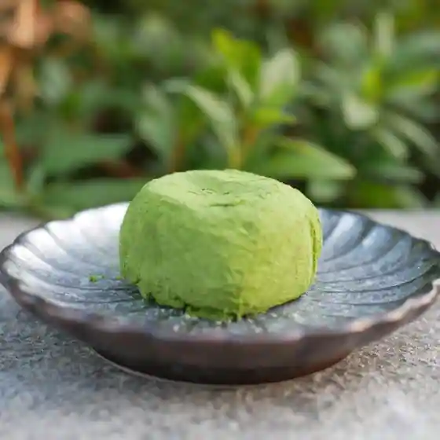
Ito Ju Ka Ho Hon
十割手打 そば処 百百百百
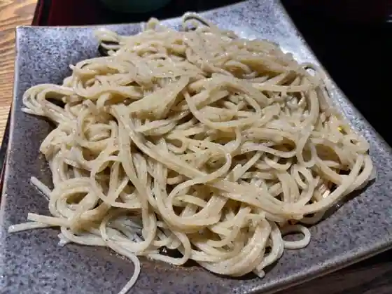
Ju Wari Teuchi Soba Tokoro Hyaku Hyaku Hyaku Hyaku
クラブハリエ ジュブリルタン
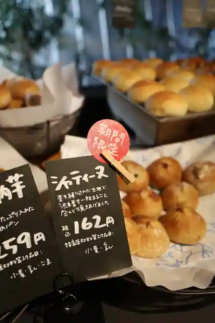
Kurabuharie Juburirutan
近江肉せんなり亭 伽羅
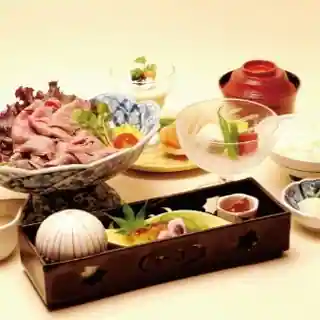
Omi Niku Sennari Tei Kara
名城園
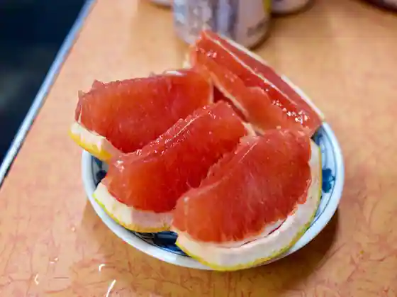
Meijo Sono
とんかつ MIDORIYA
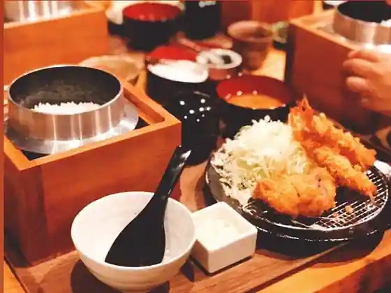
Tonkatsu MIDORIYA
一休
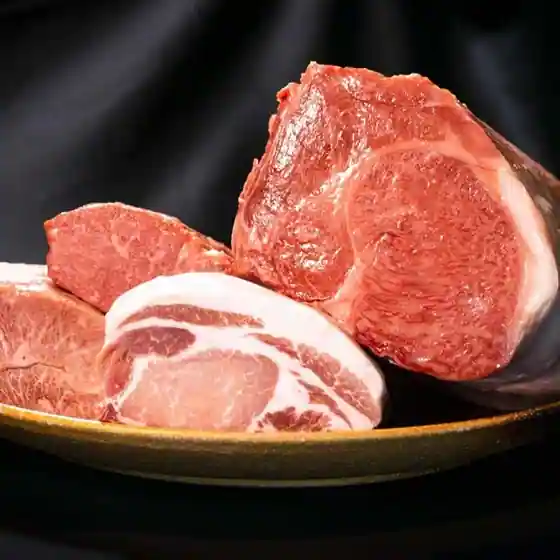
Ikkyu
ラーメン本気
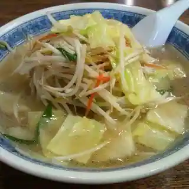
Ramen Honki
麺や 江陽軒 彦根駅前店
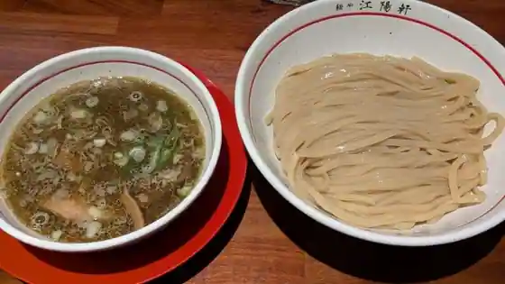
Men Ya Koyo Ken Hikone Ekimae
マイクロレデイコーヒースタンド
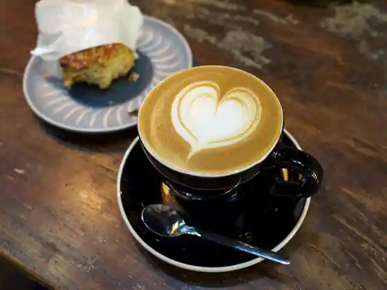
Maikuroredei Coffee Sutando
近江道家
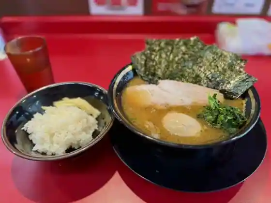
Omi Doka
阿吽
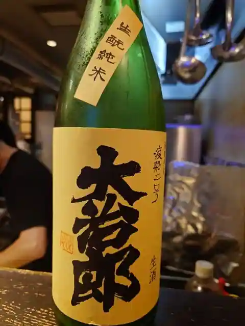
Aun
どら焼き虎てつ 本店
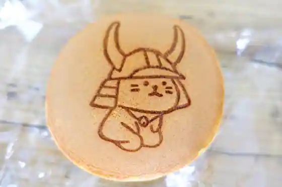
Dora Yaki Tora Tetsu Hon
うなぎや源内
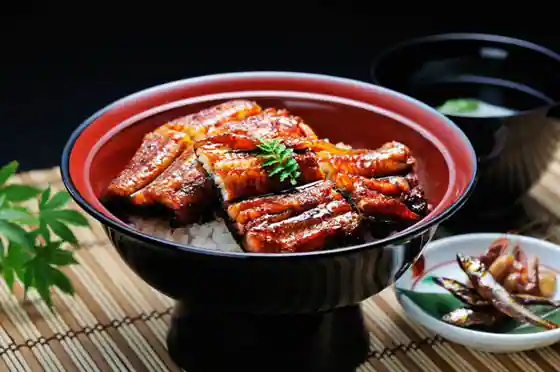
Unagiya Gennai
らーめんチキン野郎 本店
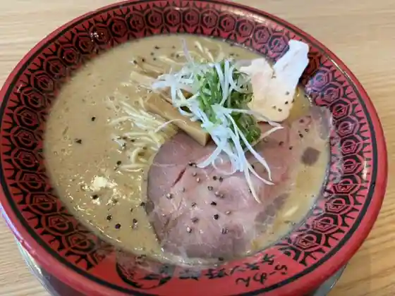
Ramen Chikin Yaro Hon
ホルモン・焼肉 一休亭 元 彦根駅前店
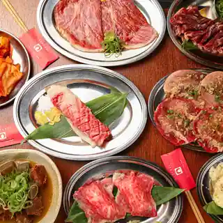
Horumon Yakiniku Ikkyu Tei Moto Hikone Ekimae
まるいし
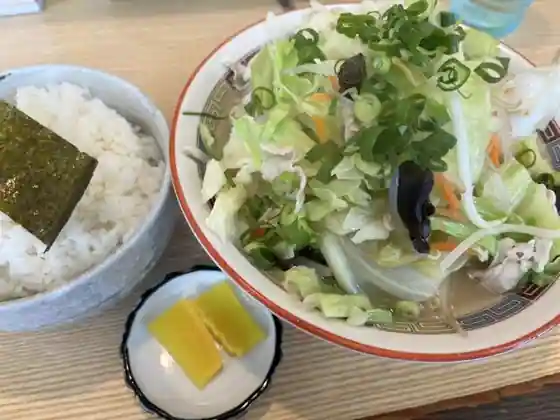
Maruishi
つる亀庵
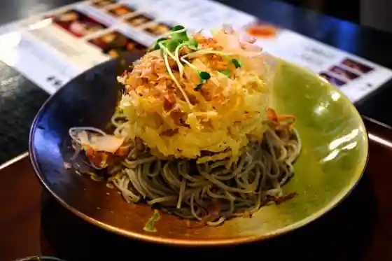
Tsuru Kame Iori
八千代 駅前店
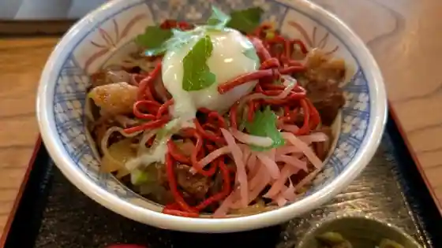
Yachiyo Ekimae
Sights
Chiyo Shrine

Kyunishi Sato Yashiki Nagaya Mon Sodebei Yakui Mon

Hikone Takei Shima Koro (Omimarin)

Iroha Matsu

Muneyasu Tera
Shichi Magari no Butsudan Machi
Biwakotsurizumubesu Hikone Ine Eda Mise
Chokyu Tera
Omimarin Hikone Minato (Mifune In Dairoku Shichi Ban Sha)
Umeki Sha
Toyotarentariisu Shiga Hikone Mise
Ryu Tan Tera
JR Hikone Eki
Hikone Kyassuru Resort & Supa
Seiryo Tera (Hikone)
Ryotei Ryokan Yasu I
TOYOTA SHARE Toyotarentaka Hikone Mise
Sho Sakai Park
Sen Rin Tera
Ohora Benzaiten (Chojuin)
Kyu Torii Motojuku
Hikone Supotsu Bunka Koryu Center
Hana no Shogai no Hi (Hikone Shiro Kinkame Jido Park)
Hikone City Bunka Plaza
Gokuraku Yu Hikone Mise
Genkyu Rakuraku Sono (Genkyu Sono)
Omitetsudo
Shiro Town (Kyu Sakanaya Town)
Zenri Kumi Ashigaru Kumi Residence
Omi Ushi Resutoran Sennari Tei
Kyu Ikeda Yashiki Nagaya Mon
Hikone Rentasaikuru
Hikone Shiro
Tennei Tera (Gohyaku Rakan)
Hikone Takeo Shima Koro (Omimarin)
Yume Kyobashi Kyassururodo
Hikone Shiro Museum
Shingonshu Omi Taishi Tera (Hikone Ekimae no Hironori San)
Rentasaikuru (Eki Rin Kun) Hikone Mise
Gurasusutajio Sutera G.
Serikawa Tsutsumi
Mei Sho Tera
Sawa Yama Castle Ruins
Sukasshu Club Jieikoto
Kyuko Miyajuku
Hikone Shiro O Hori Meguri
Hikone Sukaiadobencha
Takei Shima
Hikone Yakusho